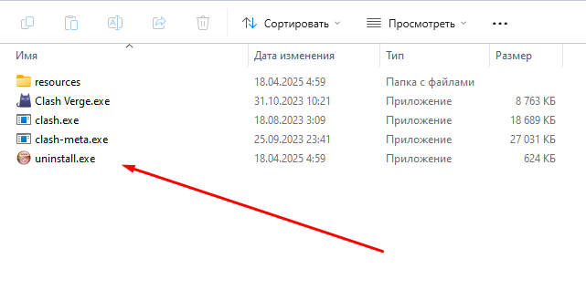
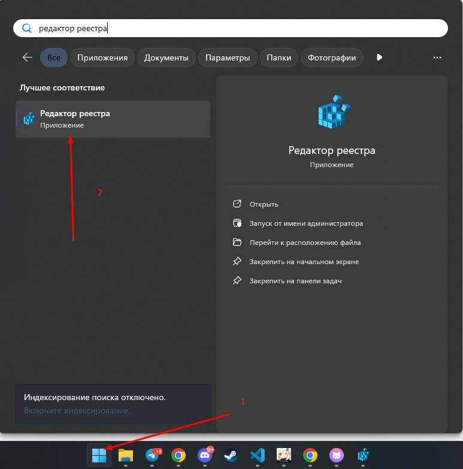
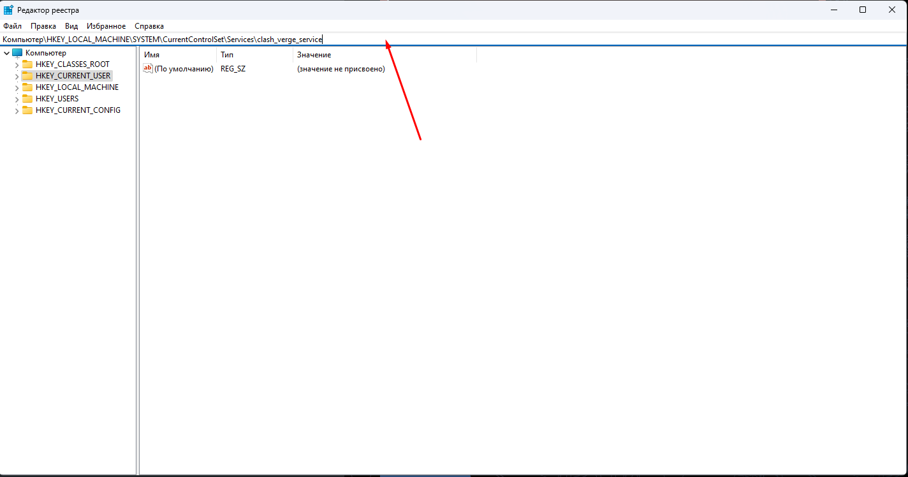
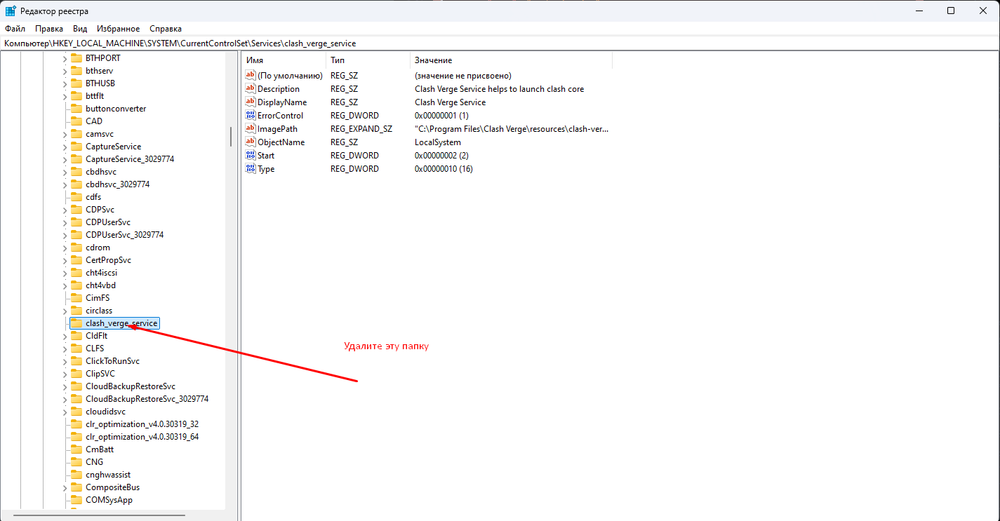
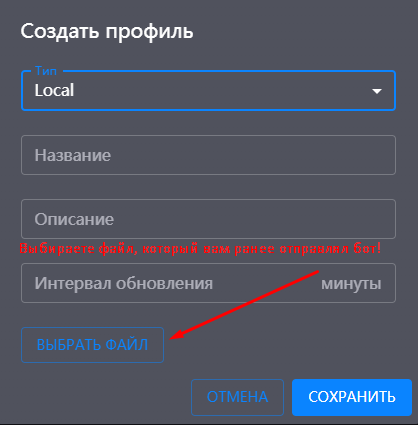
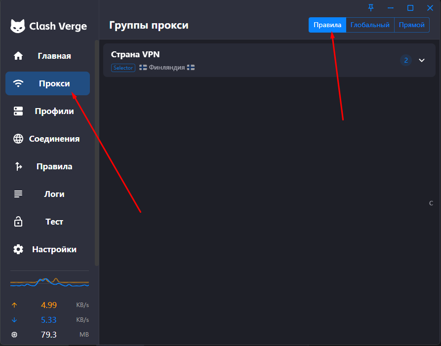

Компьютер\HKEY_LOCAL_MACHINE\SYSTEM\CurrentControlSet\Services\clash_verge_service







Если вам все-таки осталось что-то непонятно, то не стесняйтесь писать ему! Он ответит и поможет вам с любым вопросом.